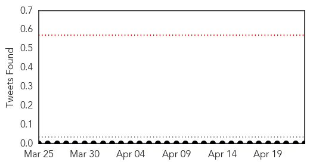
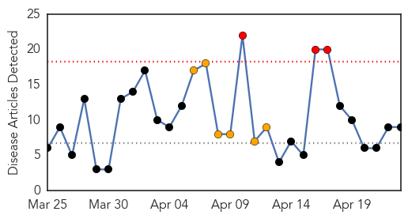

Meningitis
30-Day Web Trend
0 alerts, 0 warnings

30-Day Twitter Trend
0 alerts, 0 warnings

Article Locations

Article Confidences

Top Articles:
Top Tweets:
-
No tweets found for Apr 23, 2014
Measles
30-Day Web Trend
3 alerts, 6 warnings

30-Day Twitter Trend
0 alerts, 0 warnings

Article Locations


Article Confidences

Top Articles:
- 0.996
- Vietnam Measles Outbreak ‘Could Have Been Prevented’
- 0.996
- VIETNAM Parents slam government as measles outbreak kills 123 children in Vietnam
- 0.942
- Hospital in Vietnam metropolis treats 345 adults with measles
- 0.854
- WHO hits back at anti-vacciners
- 0.854
- No new measles cases recorded in 13 provinces
- 0.727
- Pakistan faces challenge of poor routine immunisation
- 0.621
- World Health Organization hits back at vaccine deniers
- 0.605
- More measles south of Brisbane
- 0.547
- World Immunisation Week starts today
Top Tweets:
-
No tweets found for Apr 23, 2014